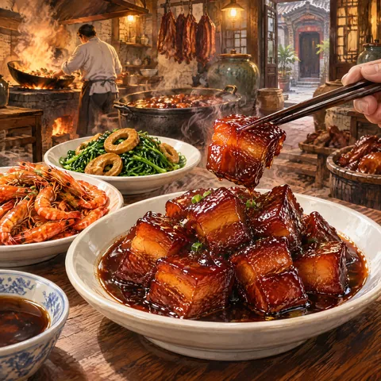

太守寻非遗中国 AI 非遗生态平台
AI 演绎
《太守行纪》第一季 · 第 01 集
互动探索 · 第一章
移动灯光，在水、稻、石与史料之间，逐步点亮响水稻作的阅读线索。
国家级非物质文化遗产代表性项目 1557 项，按官方十个门类分馆。
共 167 项子项目（分布于 30 省及中直单位）

当前选中
编号 VIII-230 · 5 项子项目
三种参与方式，各有各的入口。
创作底线：史实核对 · 不编造原话 · AI 透明标注 · 署名授权
资深导演与传承人共创
围绕《太守行纪》命题
常驻开放 · 审核上架
合作方上架与售后；我们讲故事，按成交拿佣金。
传承人本人的作品。
非遗太守和传承人的联名款。
创作者作品的衍生文创。
属地定制短剧、IP 授权、文旅方案。
上架前核验合作方资质并留档 3 年；购买链接会标明广告。
给地方文旅和品牌方